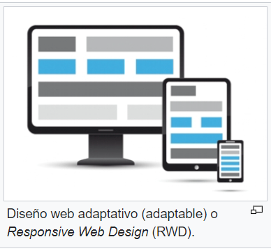

15. Diseño Web Adaptativo y Responsive
El Diseño Web Adaptativo y Responsive es la disciplina que garantiza que una interfaz web ofrezca una experiencia visual y funcional óptima en cualquier dispositivo y resolución: desde smartphones y tablets hasta pantallas panorámicas de escritorio.

1. Resoluciones, Estrategias y la Etiqueta Viewport
Puntos de Ruptura Habituales (Breakpoints)
- xs (< 576px) Smartphones compactos
- sm (≥ 576px) Móviles en horizontal
- md (≥ 768px) Tablets
- lg (≥ 992px) Monitores de portátil / escritorio
- xl / xxl (≥ 1200px) Pantallas grandes y Ultra-Wide
Gestión del Viewport
Sin esta etiqueta obligatoria en el <head>, los navegadores móviles asumen una resolución de escritorio de 980px y alejan la página haciéndola ilegible:
<meta name="viewport" content="width=device-width, initial-scale=1.0">
width=device-width: Iguala el ancho virtual de la web al ancho físico real de la pantalla.initial-scale=1.0: Establece el zoom inicial al 100% sin escalados forzados.
2. Media Queries (@media) y Filosofía Mobile-First
Las Media Queries permiten aplicar bloques de reglas CSS condicionales cuando la pantalla del dispositivo cumple ciertos requisitos de resolución o tipo de medio:
/* 1. Estilos base (Mobile-First: para móviles pequeños) */
.columna {
width: 100%;
margin-bottom: 1rem;
}
/* 2. Media Query para tablets y pantallas medianas */
@media (min-width: 768px) {
.columna {
width: 50%;
float: left;
}
}
/* 3. Media Query para pantallas de escritorio */
@media (min-width: 1200px) {
.columna {
width: 25%;
}
}
@media.3. Maquetación Unidimensional con Flexbox
Flexbox (Flexible Box Module) organiza los elementos a lo largo de un eje principal (fila o columna). Sus propiedades más esenciales son:
Propiedades del Contenedor (Padre)
display: flex;: Activa el contexto flexible.flex-direction: row | column;: Eje de disposición.justify-content: space-between | center;: Distribución en el eje principal.align-items: center | stretch;: Alineación en el eje cruzado.flex-wrap: wrap;: Permite que las cajas bajen de fila si no caben.gap: 1rem;: Espacio uniforme nativo entre hijos.
Propiedades de los Ítems (Hijos)
flex-grow: 1;: Factor de crecimiento para ocupar el espacio restante.flex-shrink: 1;: Factor de encogimiento si falta espacio.flex-basis: 250px;: Tamaño base de partida antes de distribuir.flex: 1 1 250px;: Shorthand de grow, shrink y basis.order: 1;: Permite cambiar el orden visual sin alterar el HTML.

4. Maquetación Bidimensional con CSS Grid
CSS Grid permite definir simultáneamente filas y columnas, asignando a cada celda tamaños en píxeles, porcentajes o la unidad fraccional fr (fracción del espacio disponible):
.rejilla-moderna {
display: grid;
grid-template-columns: repeat(auto-fit, minmax(280px, 1fr));
gap: 1.5rem;
}